Plotting
This page demonstrates all plots which are available through this package. Note that the API reference for each method is available here.
Demo Data
First, we’ll load some example data:
[1]:
from pathlib import Path
import sys
sys.path.append('../') # not necessary when the library is installed
from ParticlePhaseSpace import DataLoaders
from ParticlePhaseSpace import PhaseSpace
test_data_loc = Path(r'../tests/test_data/coll_PhaseSpace_xAng_0.00_yAng_0.00_angular_error_0.0.phsp').absolute()
ps_data = DataLoaders.Load_TopasData(test_data_loc)
PS = PhaseSpace(ps_data)
energy_hist_1D
[2]:
PS.plot.energy_hist_1D()
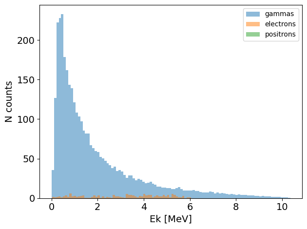
position_hist_1D
[3]:
PS.plot.position_hist_1D()
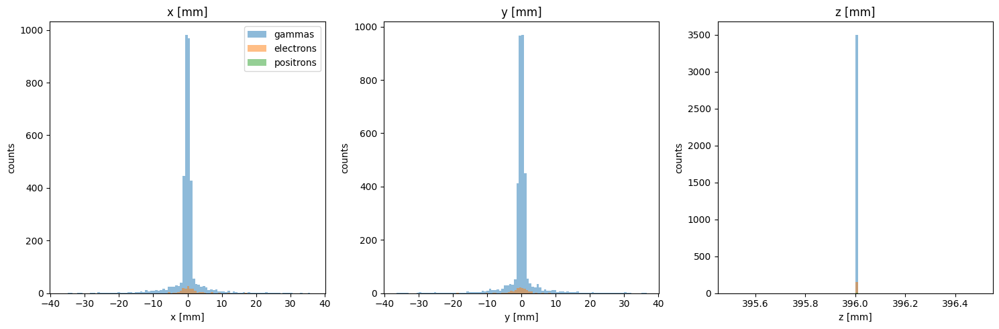
momentum_hist_1D
[4]:
PS.plot.momentum_hist_1D()
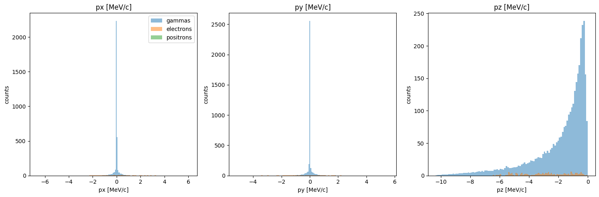
particle_positions_scatter_2D
[5]:
PS.plot.particle_positions_scatter_2D()
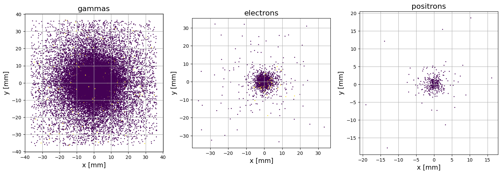
particle_positions_hist_2D
[6]:
PS.plot.particle_positions_hist_2D(xlim=[-5, 5], ylim=[-5, 5])
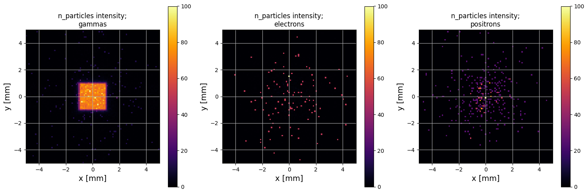
transverse_trace_space_scatter_2D
[7]:
PS.plot.transverse_trace_space_scatter_2D(xlim=[-5, 5], ylim=[-5, 5])
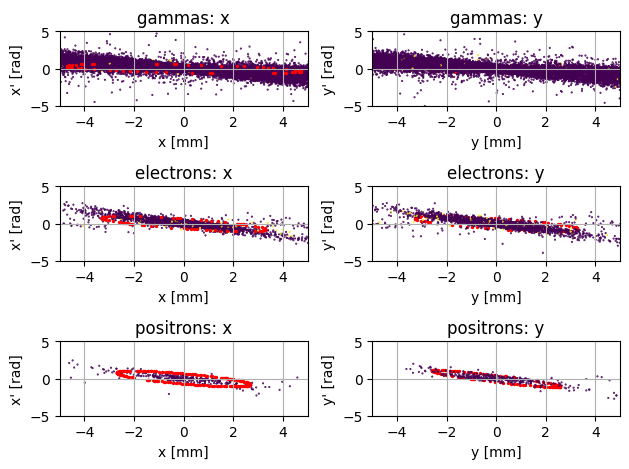
transverse_trace_space_hist_2D
[8]:
PS.plot.transverse_trace_space_hist_2D(xlim=[-5, 5], ylim=[-5, 5])
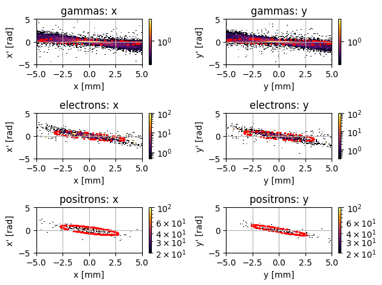
n_particles_v_time
(note: this demo data only has one time point so this doesn’t look particularly impressive!)
[9]:
PS.plot.n_particles_v_time()
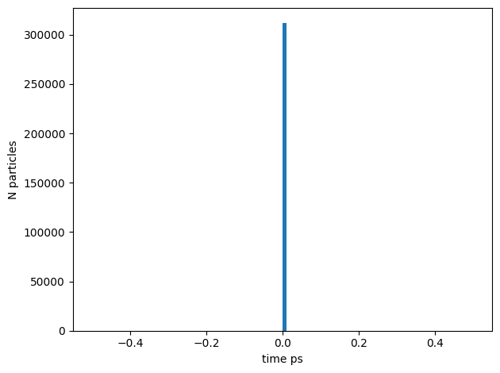
radial_energy_boxplot
[10]:
PS.plot.radial_energy_boxplot(rlim=[0, 5])
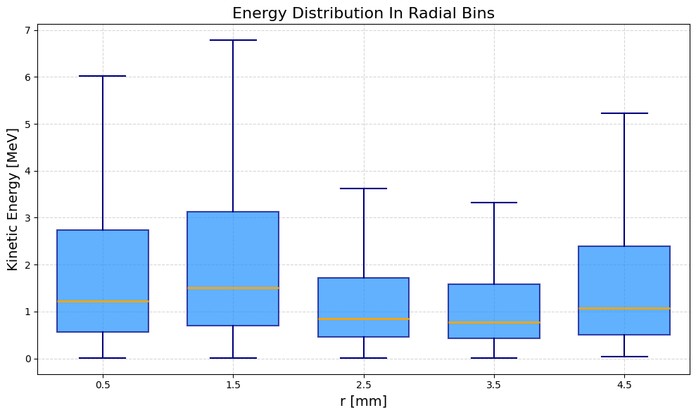
fluence_map_2D
To plot the particle fluence:
[11]:
PS.plot.fluence_map_2D(quantity="particle", at=396, xlim=[-5, 5], ylim=[-5, 5])
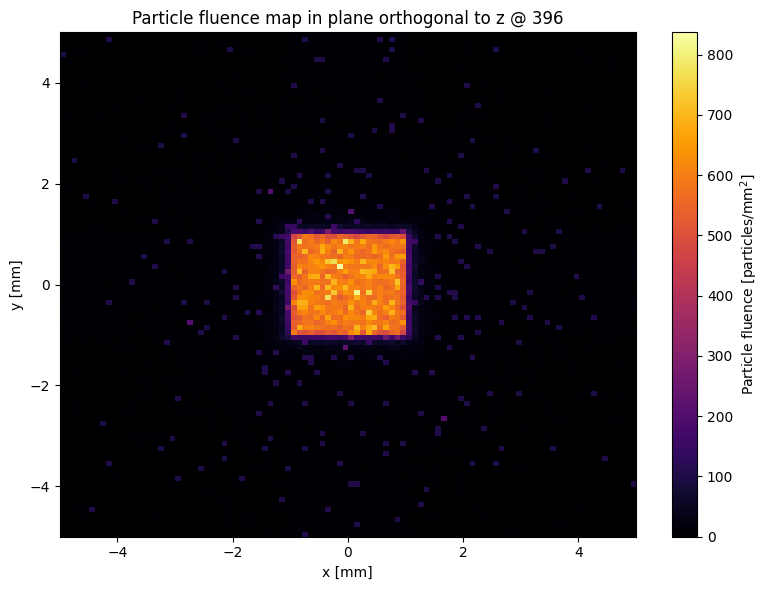
To plot the energy fluence:
[12]:
PS.plot.fluence_map_2D(quantity="energy", at=396, xlim=[-5, 5], ylim=[-5, 5])
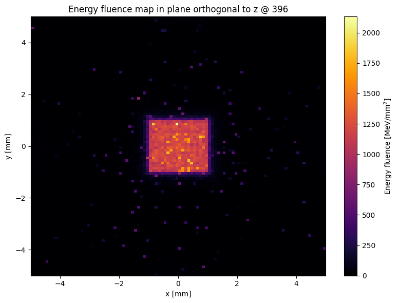
[ ]: